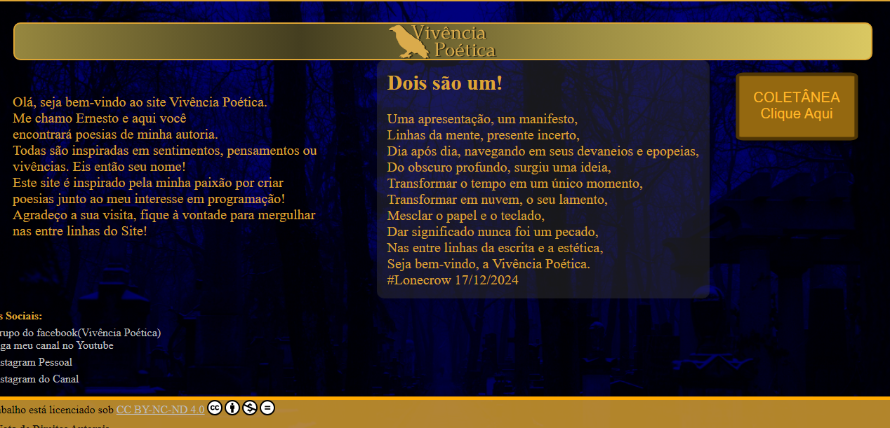
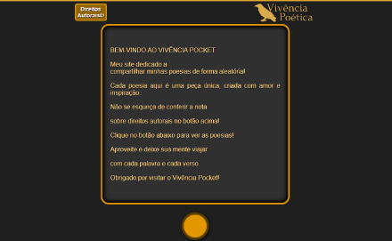
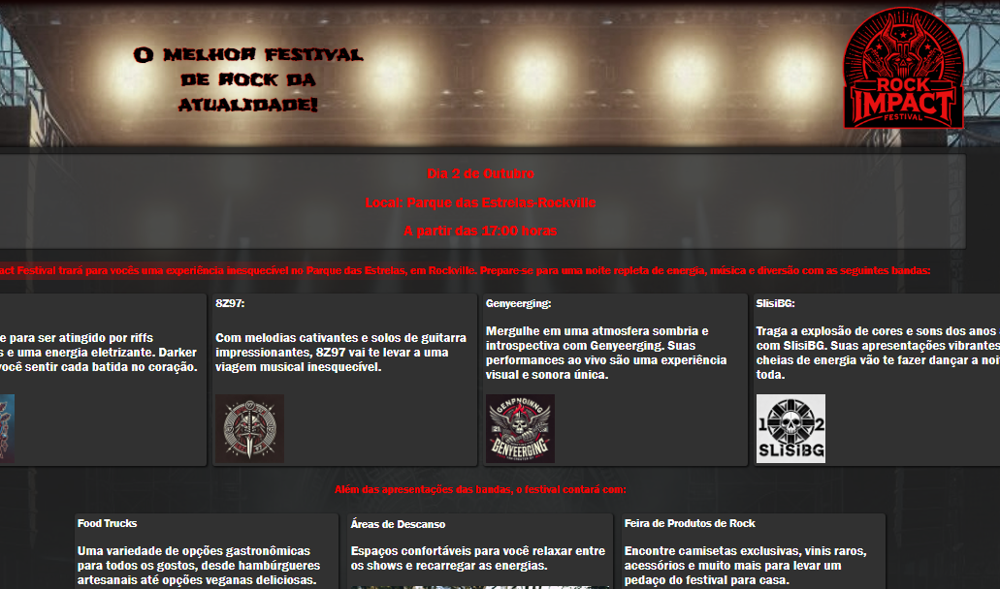
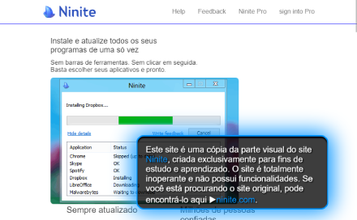
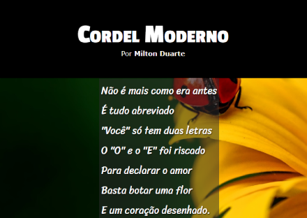
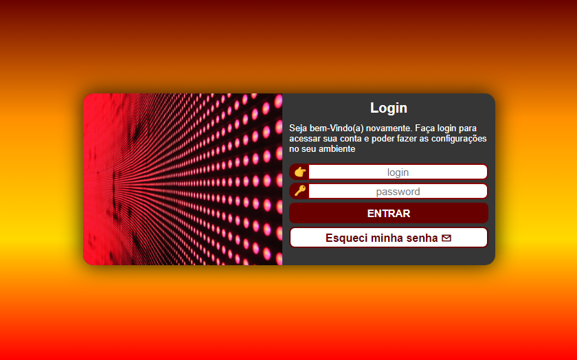
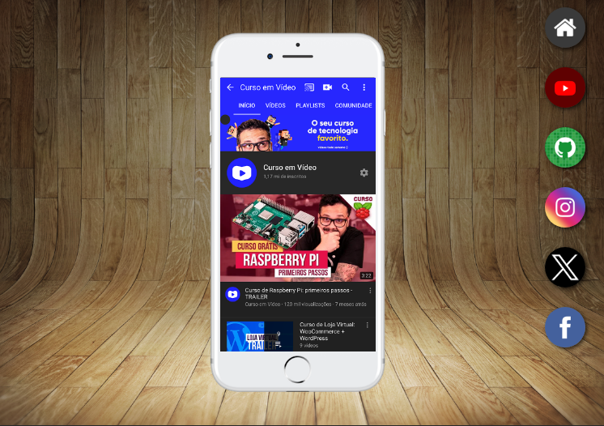

PROJETOS PESSOAIS
Clique nos projetos para ser redirecionado ao conteúdo correspondente
-
Vivência Poética
Projeto com o objetivo de criar um espaço para expor minha coletânea de poesias pessoais, um projeto que comecei no início de meus estudos e mantenho até hoje.
-
Vivência Pocket
Com foco no mobile, criei o Vivência-Pocket, onde o usuário pode simplesmente apertar um botão e uma de minhas poesias, de forma aleatória, é apresentada no display.
-
Rock Impact Festival
Como projeto de aprendizado e fictício, apresentei um evento. Usei Inteligência Artificial para gerar imagens, buscando também imagens confiáveis para evitar problemas autorais.
-
Clone Ninite
Recebi autorização direta do suporte do site, por e-mail, para criar uma cópia do ninite.com, deixando claro que é um clone 100% não funcional, desenvolvido exclusivamente para estudo e prática.
PROJETOS DE ESTUDO
Clique nos projetos para ser redirecionado ao conteúdo correspondente
-
Projeto Cordel
Para apresentar os cordéis de Milton Duarte, o projeto Cordel foi criado com ênfase no aprendizado do efeito parallax e nas boas práticas de manter referências, links e atenção aos direitos autorais.
-
Projeto Login
Focado no aprendizado e prática de formulários. Projeto Login foi explorar a criação de interfaces funcionais e seguras, aplicando boas práticas de usabilidade e validação de dados.
-
Redes Sociais
O projeto Redes Sociais explorou o uso de Iframes na incorporação de conteúdos externos, priorizando boas práticas de organização, acessibilidade e segurança.
-
Projeto Android

O projeto Android dedicado ao mascote do Android, explorou sua história, evolução e representação icônica, enquanto aplicava conhecimentos de design e criação visual.